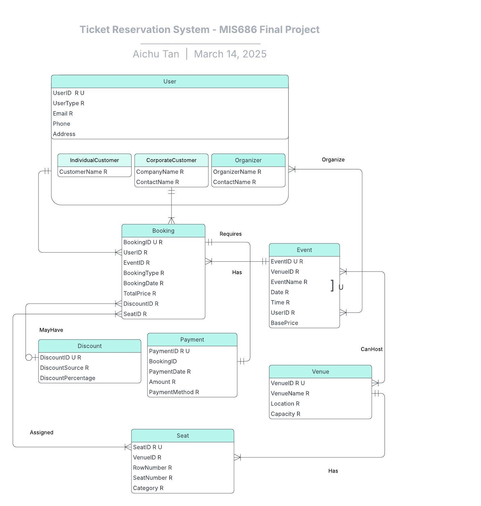
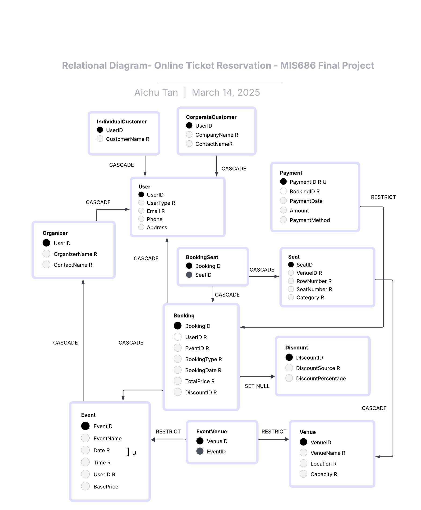

Online Ticket Database Management System
Project Overview
Developed as part of SDSU’s MIS 686 course, this project implements a full-stack online ticket reservation system.
It manages events, venues, customers, bookings, and payments using a structured relational database deployed on AWS RDS.
For analytics and business intelligence, a Python-based interactive dashboard was created using the Datapane library within a Jupyter Notebook environment.
Step-by-Step Process
-
Topic Selection: Designed for an online ticket
reservation platform that handles multiple venues, events, customer
types, discount options, and payment methods.
-
Data Modeling: Created a conceptual ERD and translated
it into a relational schema with appropriate keys and relationships to
enforce business rules and support query optimization.
-
Implementation: MySQL-based DDL and DML scripts were
used to define the schema and populate the database with realistic
sample data, generated using ChatGPT and external tools like Google Sheets.
-
Deployment: The database was deployed on AWS RDS with two IAM
roles:
mis686-databaseAT-admin (full access) and
mis686-database-user (read-only access).
-
Analysis and Dashboard: SQL queries were written to answer business questions related to revenue, customer behavior, and venue performance. Python (via Jupyter Notebook) and the
datapane library were used to generate an interactive dashboard for visualizing the insights.
ERD & Schema
The data model includes core entities such as Customer,
Event, Venue, Booking, and
Payment. It supports complex relationships like many-to-many
(e.g., customers and events) and includes supertype-subtype design for
customer types (e.g., regular, VIP).

Figure 1: Entity-Relationship Diagram (ERD)

Figure 2: Relational Schema Diagram
Key SQL Features
- Views: TopRevenueEvents, PaymentSummary
-
Triggers: check_booking_date, update_seat_availability
-
Stored Procedures: InsertBooking,
GetEventRevenueByMonth
Analytics Dashboard
The dashboard was developed using a Jupyter Notebook and includes
visualizations for KPIs such as:
- Top Revenue-Generating Events and Venues
- Monthly Revenue and Growth Trends
- Seat Category Sales and Venue Occupancy Rates
- Customer Segmentation by Type and Payment Behavior
▶ View Interactive Dashboard